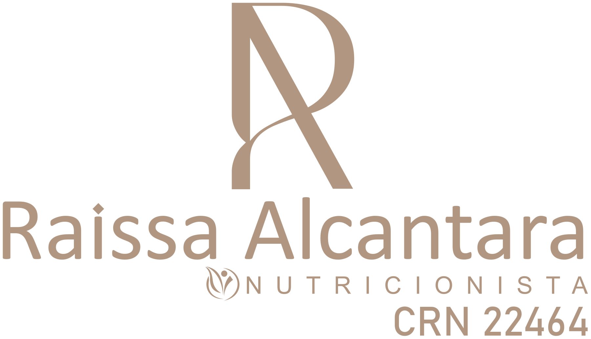

01
Reeducação
alimentar
Descubra escolhas equilibradas e construa hábitos possíveis, sem abrir mão do prazer de comer.
Vamos conversar →
Descubra uma forma mais gentil de cuidar de você. Nutrição que respeita seu corpo, abraça sua rotina e abre espaço para o prazer de comer.
Quero cuidar de mim → Como funciona o acompanhamento →Alimentação também é afeto, cultura, prazer e rotina. Por isso, o cuidado nutricional deve olhar para você por inteiro.
A proposta é construir escolhas possíveis e uma relação mais tranquila com a comida, com orientação baseada em ciência e espaço para a vida real.
Explore o acompanhamento →Cada pessoa tem uma história.
O seu acompanhamento também.
Descubra escolhas equilibradas e construa hábitos possíveis, sem abrir mão do prazer de comer.
Vamos conversar →Cuide da sua alimentação com um olhar atento às suas necessidades e ao seu bem-estar.
Vamos conversar →Encontre espaço para escutar seu corpo e compreender seus hábitos com acolhimento.
Vamos conversar →Um processo construído com você,
e que acompanha o seu ritmo.
Uma conversa sobre sua história, sua rotina e o que você deseja cuidar.
Orientações e estratégias individualizadas para transformar intenção em escolhas possíveis.
Acompanhamento para acolher desafios, ajustar o plano e reconhecer cada conquista.
Conheça o acompanhamento e consulte disponibilidade, valores e formas de atendimento diretamente com a profissional.
Perfil de contato: @raissanutri1. Envie uma mensagem pelo Direct.